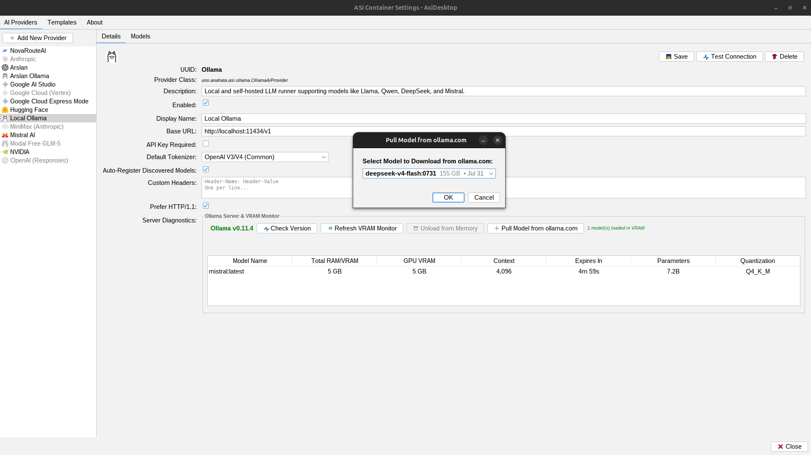

Local Ollama
Air-gapped, zero cloud dependency, sovereign local intelligence.
The Ollama AI Provider (uno.anahata.asi.ollama.OllamaAiProvider) equips your Anahata ASI container with direct, first-class control over local and self-hosted Ollama instances. Run frontier open-source models like Llama 3.3, DeepSeek R1, Qwen 2.5 Coder, and Mistral right on your developer workstation or air-gapped enterprise cluster.

Click to enlarge: Live VRAM telemetry (Total RAM, GPU VRAM, Context, Expiry) and 1-click model pulling from ollama.com.
Real-Time GPU VRAM & Process Monitor
Unlike basic API wrappers that treat local servers as black boxes, Anahata ASI actively communicates with Ollama's native management endpoints:
Native /api/ps Inspection
Monitors exactly which models are loaded in host RAM and dedicated GPU VRAM, along with active context length, parameter count, and quantization level (e.g. Q4_K_M).
Instant GPU Memory Unloading
Need GPU memory for gaming, training, or switching models? The "Unload from Memory" button sends an atomic keep_alive: 0 call to release dedicated VRAM instantly without killing the server process.
1-Click Model Pulling from ollama.com
Never leave your development environment to run terminal commands. Click "Pull Model from ollama.com" to open a unified download dialog:
- Live Registry Discovery: Queries
https://ollama.com/api/tagsdirectly to fetch available models, archive sizes, and release dates. - Already-Installed Detection: Cross-references models against your live server's
/api/tags, marking installed models with a green[Installed]badge so you never re-download models by accident. - Streaming Download Telemetry: Streams real-time progress percentages, download rates, and layer extraction status directly into the panel's progress bar.
Zero-Lockin Architecture
OllamaAiProvider extends Anahata's universal OpenAiChatCompletionsProvider:
By speaking standard /v1/chat/completions over HTTP, Anahata treats Ollama with the exact same first-class streaming and function calling pipeline as cloud providers. There are no vendor SDK dependencies, no binary bloat, and no closed-source libraries.
Dynamic Context Allocation (num_ctx)
By default, Ollama clamps requests to a 2,048 token context window unless explicitly instructed otherwise. Anahata ASI solves this automatically:
When querying /api/tags or /api/show, Anahata extracts the model's true context limit (e.g., 32,768, 65,536, or 131,072 tokens). During every request, OllamaModel.enrichPayload() injects:
"options": { "num_ctx": 32768 }
This ensures your local models never suffer from premature context truncation when performing deep workspace analysis or large Java file edits.
Air-Gapped Sovereign AI
For defense, government, healthcare, financial institutions, and privacy-focused developers, running AI completely air-gapped is a strict requirement:
With apiKeyRequired = false and direct binding to localhost:11434 or local private networks, not a single byte of your source code, system prompts, or tool execution outputs ever touches the public internet.